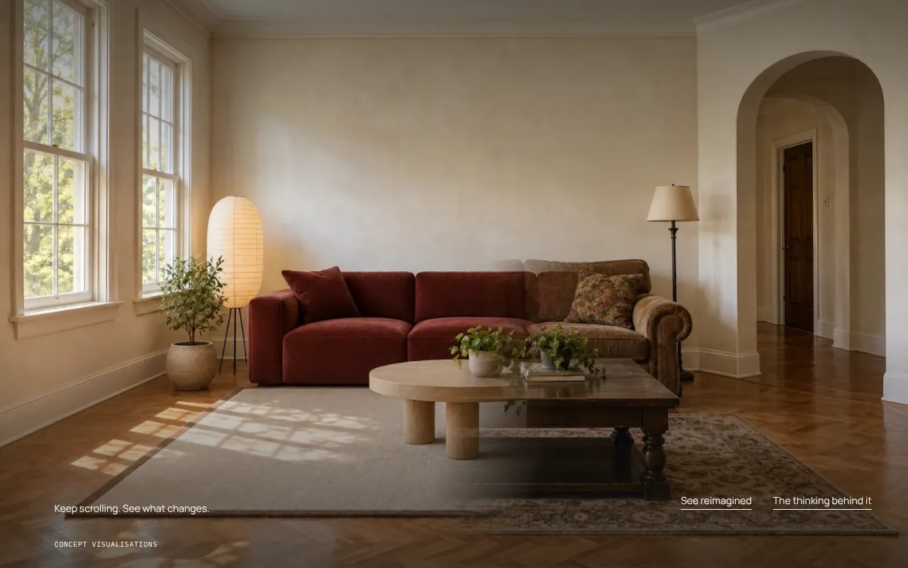
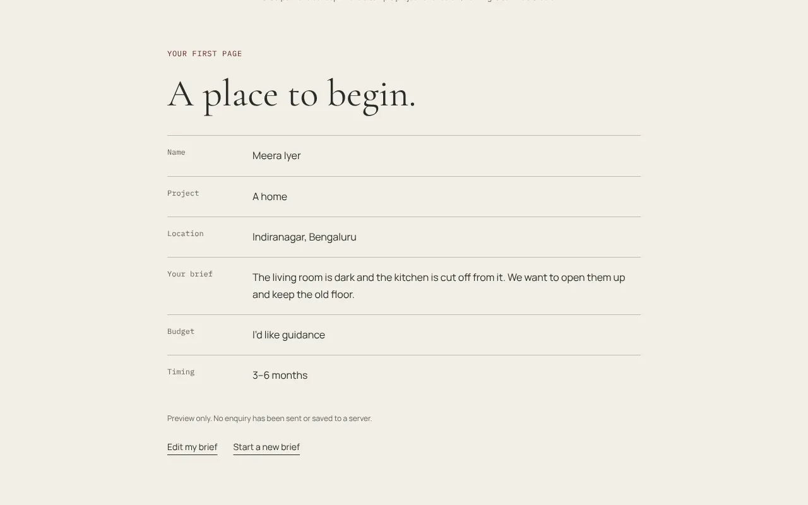

Case study · Concept · Studio website
Second Nature: show the possibility. Make the first conversation easier.
A fictional architecture and interiors studio for homes and places with a past. The site’s job: make an unfamiliar process feel tangible, then turn interest into a brief a studio could actually use.
- What it is
- A self-initiated concept for a fictional studio in Bengaluru working with existing buildings
- The flows
- Scroll-driven room transformation → two project studies → the process → a brief builder with budget ranges and an “I’d like guidance” option
- What I did
- Art direction, UX, copy, frontend. Room views and collages generated from a reference-led art direction
- Status
- Demo. The brief is previewed on the page; nothing is sent

The brief I set myself
For someone considering an interior project, “we design beautiful spaces” doesn’t explain what could change in their own home, or what working with a studio is like. Photographs alone don’t show reasoning.
RIBA’s guidance on working with an architect lists what a client needs to decide: comparable experience, creative thinking, the ability to deliver, and a brief with aims, budget and expectations. The site is built around those decisions, in that order.
What the site does
- Opening and practice. Architecture, interiors and adaptive reuse, each described concretely enough to recognise your own project in.
- A room, reconsidered. One room keeps its windows, floor and proportions while the furniture changes as you scroll. Direct controls for people who prefer them; on phones, a single reveal when the room comes into view.
- Two studies. The collected home and an old workshop imagined as a neighbourhood cafe. Each connects the existing space to a proposal: the question, the proposal, the intention.
- The approach. Four stages in plain words, from understanding the place to putting the plan into practice.
- The brief. Type of project, where it is, what should change, a budget range or “I’d like guidance”, and timing—previewed as a first page the studio could reply to.


Key decisions
Make the change visible.
The site transforms one room as you scroll, keeping its architecture while replacing the furniture. It explains the studio’s reasoning better than a paragraph could, and it works with direct controls and reduced motion too.
Explain what was considered.
Two project studies connect the existing space to a proposal. Drawings and collected-object artwork carry the visual language instead of a conventional image grid.
Give the conversation a useful starting point.
The enquiry asks about the place, the change, budget and timing. Budget is a range rather than a number, with guidance as an option, because most people don’t know what a project costs and shouldn’t have to guess.
Directions I dropped
The first before/after was a slider with a divider and a percentage. It was a widget, not a room. It became a whole-room dissolve driven by scrolling, then a soft diagonal reveal so the architecture never flickers.
The ending was three text sections in a row. They became a studio worktable composition and four short stages. On phones the scroll-scrubbing confused more than it showed, so the room now reveals once, when it comes into view.
What I’d measure if it were live
- How many visitors reach the end of the room reveal, and how many use the direct controls instead.
- Project study opens, and which study leads to the brief.
- Brief starts versus previews, and which field people stop at.
- The share choosing “I’d like guidance” over a budget range.
- Time from landing to the first brief field.
Second Nature is a fictional studio made for a portfolio. Project stories and proposed interventions are concept content, not completed commissions. The room views and artwork were generated for this project. The brief previews on the page; nothing is sent or stored.